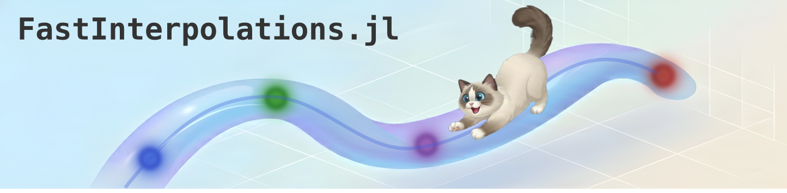
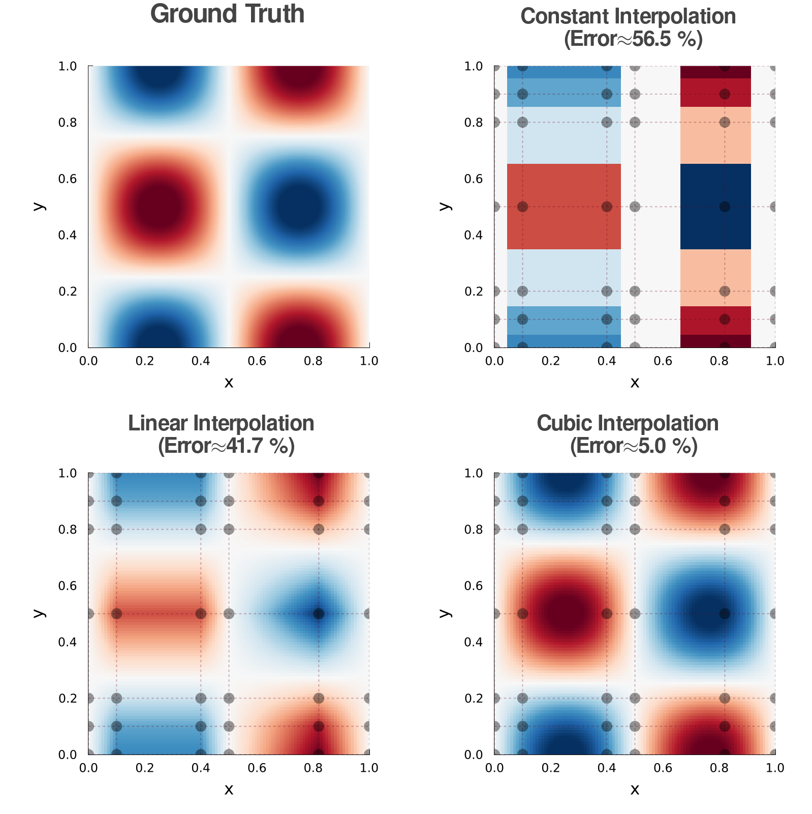
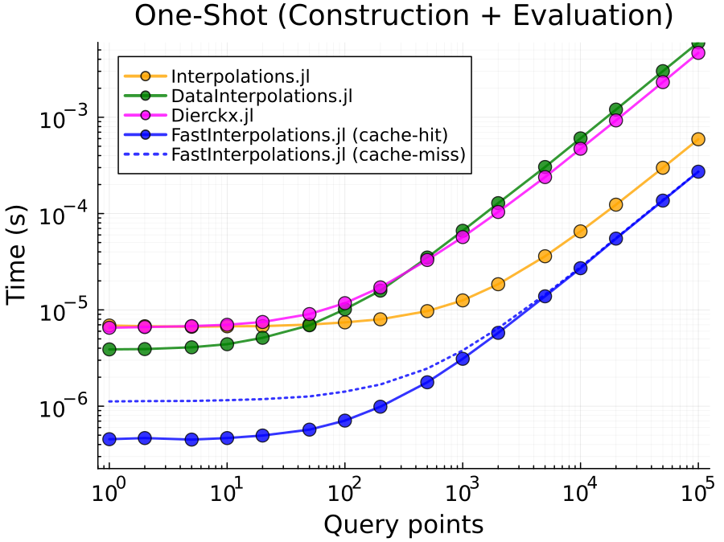

FastInterpolations.jl
A high-performance N-dimensional interpolation package for Julia, optimized for zero-allocation hot loops.
Key Strengths
- 🚀 Fast: Optimized algorithms that outperform other packages.
- ✅ Zero-Allocation: No GC pressure on hot loops.
- 🎯 Explicit BCs: Support custom physical boundary conditions.
- 📐 Analytic Derivatives & Integration: Analytical differential operators (gradient, hessian, etc.) and exact spline integration.
- 🌌 Generic: Supports Complex values and AD (AutoDiff) — ForwardDiff, Zygote, Enzyme.
- 🧵 Thread-Safe: Lock-free concurrent access across multiple threads.
Supported Methods
FastInterpolations.jl supports four interpolation methods: Constant, Linear, Quadratic, and Cubic splines.
| Method | Continuity | Best For |
|---|---|---|
constant_interp | C⁻¹ | Step functions |
linear_interp | C⁰ | Fast, lightweight, no overshoot |
quadratic_interp | C¹ | Smooth derivatives at low cost |
cubic_interp | C² | High-accuracy splines |
Quick Start
FastInterpolations.jl provides two primary API styles, plus a specialized SeriesInterpolant for multi-series data.
1. One-shot API (Dynamic Data)
Best when y values change every step, but the grid x remains fixed.
using FastInterpolations
# Define grid and query points
x = range(0.0, 10.0, 100) # source grid (100 points)
y = sin.(x) # initial y data
# Basic usage
cubic_interp(x, y, 0.33) # return interpolated value at x=0.33
cubic_interp(x, y, [0.11, 0.22, 0.33]) # return values at x=[0.11,0.22,0.33]
# Advanced usage (in-place vector query)
xq = range(0.0, 10.0, 500) # query points (500 points)
out = similar(xq) # pre-allocate output buffer
for t in 1:1000
@. y = sin(x + 0.01t) # y values evolve each timestep
cubic_interp!(out, x, y, xq) # zero-allocation ✅ (after warm-up)
end2. Interpolant API (Static Data)
Best for fixed lookup tables where both x and y are constant.
itp = cubic_interp(x, y) # pre-compute spline coefficients once
result = itp(5.5) # evaluate at single point
result = itp(xq) # evaluate at multiple points
@. result = a * itp(xq) + b # seamless broadcast fusion2.1 SeriesInterpolant (Multiple Series)
When multiple y-series share the same x-grid, wrap them with Series(...) to create a SeriesInterpolant. It leverages SIMD and cache locality for >10× faster evaluation compared to looping over individual interpolants.
x = range(0, 10, 100)
y_series = Series( sin.(x), cos.(x), tan.(x), exp.(-x) ) # 4 series, on the same grid
sitp = cubic_interp(x, y_series) # create SeriesInterpolant
sitp(0.5) # → 4-element Vector: [≈sin(0.5), ≈cos(0.5), ≈tan(0.5), ≈exp(-0.5)]For detailed usage and performance trade-offs, see the API Selection Guide.
Multi-Dimensional Interpolation
FastInterpolations.jl supports 2D, 3D, and N-dimensional interpolation on any rectilinear grid (uniform or non-uniform). The API generalizes the 1D case by packing axis-specific information into Tuples — for example, where 1D takes x, ND takes (x, y, z, ...) for the grid, query points, and parameters. See the ND Interpolation Guide for details.
using FastInterpolations
# Define 2D rectilinear grid (can be non-uniform) and data
x, y = [0.0, 0.2, 0.5, 1.0], range(0, 2π, 50)
data2D = [sin(xi) * cos(yi) for xi in x, yi in y]
xq, yq = [0.1, 0.2], [0.3, 0.4] # query vectors
# 1. One-shot API: (grid_tuple, data, query_tuple)
val = cubic_interp((x, y), data2D, (0.5, 0.3)) # single point
vals = cubic_interp((x, y), data2D, (xq, yq)) # vector query
# 2. Interpolant API: Precompute coefficients once
itp = cubic_interp((x, y), data2D)
itp((0.5, 0.3)) # scalar query
itp((xq, yq)) # vector queryKey Features:
- Flexible Grids: Supports both uniform and non-uniform rectilinear grids.
- Full Parity: Every 1D feature (BCs, derivatives, extrapolation) works in ND via Tuples.
- Zero-Allocation: Optimized tensor-product evaluation for high-performance loops.
2D Visualization Example
Comparison on a non-uniform 2D rectilinear grid for $f(x, y) = \sin(2\pi x) \cos(2\pi y)$. Cubic interpolation maintains high accuracy and captures extrema even on coarse, non-uniform grids. The gray dots in the image below represent the given node points (6x7 grid), and the dashed lines illustrate the grid structure.

Performance
Benchmark comparison against Interpolations.jl, DataInterpolations.jl, and Dierckx.jl for cubic spline interpolation.
Env: Local · macOS 15.7.3 · Apple M1 Pro · Julia 1.12.5<br> Pkg: FastInterpolations (v0.4.4) · Interpolations (v0.16.2) · DataInterpolations (v8.9.0) · Dierckx (v0.5.4)

Speedup: (2.2 ~ 15.1)× vs Interpolations.jl · (8.4 ~ 22.3)× vs DataInterpolations.jl · (14.2 ~ 18.6)× vs Dierckx.jl
One-shot (construction + evaluation) time per call with fixed grid size $n=100$. FastInterpolations.jl is significantly faster even on the first call (cache-miss), and becomes even faster on subsequent calls (cache-hit).
More Features
Analytic Derivatives
Exact 1st–3rd order derivatives from spline coefficients — no finite differences. ND interpolants support gradient, hessian, and laplacian.
# 1D example
cubic_interp(x, y, 5.0; deriv=DerivOp(1)) # 1D: f'(x)
# 2D example
itp2d = cubic_interp((x, y), data2D)
point = (0.5, 1.0) # query point (x, y)
itp2d(point; deriv=DerivOp(1, 0)) # ∂f/∂x
itp2d(point; deriv=DerivOp(1, 1)) # ∂²f/∂x∂y (mixed partial)
gradient(itp2d, point) # (∂f/∂x, ∂f/∂y)
hessian(itp2d, point) # 2×2 Hessian matrix→ 1D Derivatives · ND Derivatives
Analytic Integration
Exact definite integration from spline coefficients — no numerical quadrature.
itp = cubic_interp(x, y)
integrate(itp, 0.0, π) # 1D: ∫₀^π f(x) dx
itp2d = cubic_interp((x, y), data2D)
integrate(itp2d, (0.0, 0.0), (1.0, 1.0)) # 2D: ∫∫ f dA over [0,1]²
integrate(itp2d) # 2D: full-domain integral→ 1D Integration · ND Integration
Boundary Conditions
Rich type system for physical BCs — Neumann, periodic, polynomial fit, and custom per-endpoint.
cubic_interp(x, y, xq; bc=CubicFit()) # cubic polynomial fit (default)
cubic_interp(x, y, xq; bc=PeriodicBC()) # C²-continuous periodic
cubic_interp(x, y, xq; bc=BCPair(Deriv1(2.0), Deriv1(0.0))) # Neumann: specify f' at each end
cubic_interp(x, y, xq; bc=BCPair(Deriv1(2.0), Deriv2(0.0))) # mixed: slope left, curvature rightExtrapolation
Queries outside the data domain throw DomainError by default. Use Extrap() to allow them:
cubic_interp(x, y; extrap=Extrap(:clamp)) # clamp to boundary value
cubic_interp(x, y; extrap=Extrap(:extend)) # extend boundary polynomial
cubic_interp(x, y; extrap=Extrap(:fill; fill_value=NaN)) # fill with constant value
# also :wrap (periodic) and :none (default, throws DomainError)Search
Non-uniform (Vector) grids require an interval search. The default AutoSearch() picks the best strategy per-call:
itp = linear_interp(x_vec, y_vec; search=AutoSearch()) # default, adapts per-call
itp(0.5) # scalar → binary search
itp(sorted_xq) # sorted detected → linear walk + binary fallback
itp(rand_xq) # random detected → binary search
itp(0.5; search=BinarySearch()) # manual override (rarely needed)Hints
Give the search a positional hint to speed up lookup — enables O(1) sequential access (ODE solvers, streaming):
itp = cubic_interp(x, y)
hint = Ref(1) # grid interval index, updated automatically
for t in time_steps # monotonic or streaming
val = itp(t; hint=hint) # hint is reused & updated each call
endSee also: Factory Functions · Complex Numbers · AutoDiff · Thread Safety · Optim.jl Integration
Documentation
For detailed guides on boundary conditions, extrapolation, and performance tuning, visit the Documentation.
License
Apache License 2.0
Contact
Min-Gu Yoo  (General Atomics) yoom@fusion.gat.com
(General Atomics) yoom@fusion.gat.com